| Index |
| 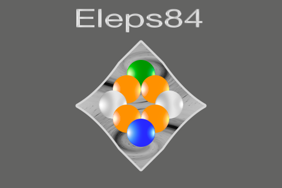 |
| ◎ | iPhone、iPodTouch用の、2人用ボードゲームです。 |
| ◎ | Ｅｌｅｐｓ８４（エレプス８４）について Eleps とは、ElectronPiecesの略で、どんな場所時間でも共通な単位として、加算、分配、配置、移動、取得することが可能である電子のように、共通 に設定、取得、連係、分配ができる性質の駒を想定し、それを共通駒として８４個設け、その駒の取得を目的とする競技として、Eleps84というタイ トル名を付けました。 |
| ◎ | 基本的な競技方法 ・競技者１が先手です。 ・競技者１駒を、盤上の共通駒が指定されているポイントに指定して、共通駒を取得します。 ・その共通駒の個数が、競技者１の得点になります。 ・更に、盤上の無指定のポイントに、共通駒を４個指定します。 ・競技者２も競技者２駒と共通駒で、競技者１と同様の指定を行います。 ・上記の指定を繰り返し、最終的に得点の多い競技者が勝ちとなります。 |
| ◎ | [2×4,3×12,4×9;2×4×10;84]
([接続数×ポイント数,,;競技人数x共通駒数x指定回数;全共通駒数]) 盤上に、２接続のポイントが４ポイント、３接続のポイントが１２ポイント、４接続のポイントが９ ポイントあります。２人の競技者が、４個の共通駒の指定を１０回行います。全部で８４個の共通駒があります。 |
| ◎ | 高解像度(Retina-display)に対応しています。 |
| ◎ | 現在のヴァージョンは2.1です。 |
| ◎ | iPhone5、iPod touch第5世代のRetina4インチディスプレイに対応しました。(Ver.1.1) |
| ◎ | 画面の調整を行い、広告バナーを設定しました。(Ver.1.2) |
| ◎ | コンテンツ関連、コンピュータの思考部分、広告関連の更新を行いました。(Ver.1.3) |
| ◎ | 表示項目を追加、変更しました。(Ver.1.4) |
| ◎ | メニュー画面を変更しました。(Ver.1.5) |
| ◎ | 駒の設定音を変更しました。(Ver.1.6) |
| ◎ | メニュー画面を変更し、情報画面を追加しました。(Ver.1.7) |
| ◎ | 効果音を更新しました。(Ver.1.8) |
| ◎ | iOS6〜iOS7の対応になりました。(Ver.1.9) |
| ◎ | 先攻の駒を選択することが可能になりました。(Ver.1.9) |
| ◎ | 競技画面の修正を行いました。(Ver.2.0) |
| ◎ | 広告の表示方法を変えました。(Ver.2.0) |
| ◎ | ios新規バージョンの対応を行いました。(Ver.2.1) |
| 1．
競技開始前の競技画面 |
2．
競技者１が競技者１駒を指定後の競技画面 |
3．
競技者１が共通駒を４個指定後の競技画面 |
4．
競技者２が競技者２駒を指定後の競技画面 |
５．競技者２が共通駒を４個指定後の競技画面 |
| 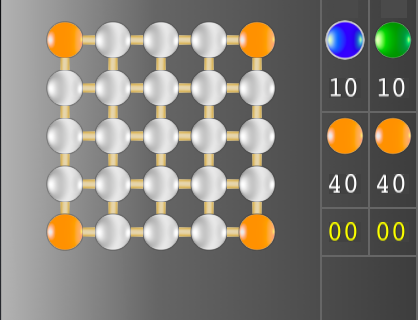 | 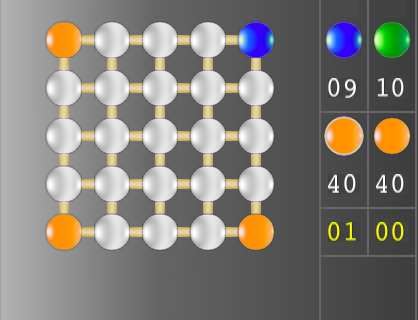 |
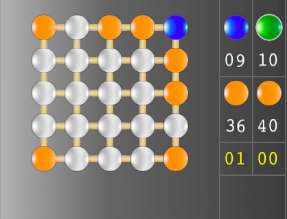 |
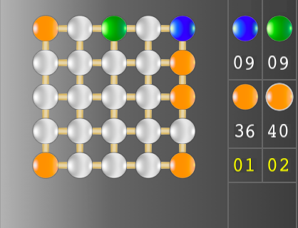 |
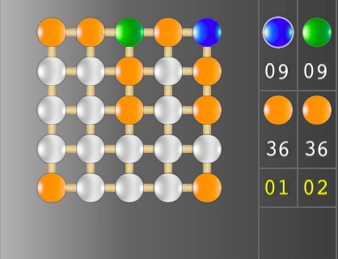 |
| 表示盤
に、２５個のポイントがあり、４ポイントに、共通駒が設定されています。 |
表示盤上
の共通駒があったポイントをタッチすることにより、競技者１駒が指定され、競技者１駒の個数が１０から９に１引かれます。 |
共通駒を
４個連続で、表示盤上の無指定のポイントにタッチします。 |
競技者２
駒を左の列から３番目、上の行から１番目に指定しました。共通駒を２個取得することにより、競技者２の得点が２になります。 ※１ |
共通駒を４個連続で、表示盤上の無指定のポイント
にタッチします。 |
| 1．
競技者１が競技者１駒を指定後の競技画面 |
２．競技者１が共通駒を４個指定後の競技画面 |
３．競技者２が競技者２駒を指定後の競技画面 |
４．競技者２が共通駒を４個指定後の競技画面 |
５．得点計算後の競技終了画面 |
| 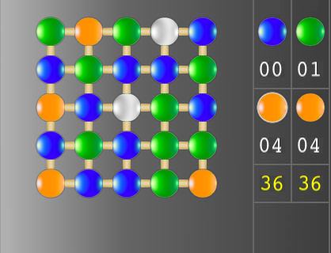 |
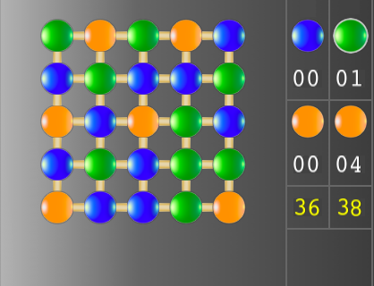 |
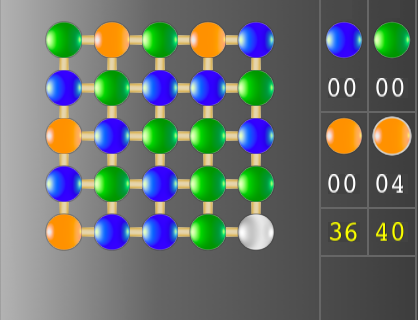 |
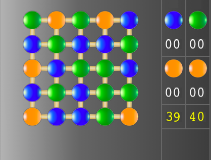 |
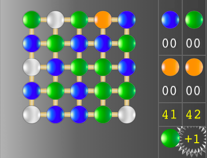 |
| 盤上に無指定のポイントが、２個あります。 |
指定できる無指定のポイントは２ポイントなので、残りの共通駒２個は、 競技者２の得点となります。 | 競技者２駒を左の列から３番目、上の行から３番目に指定しました。共通 駒を２個取得することにより、競技者２の得点が４０になります。 | 指定できる無指定のポイントは１ポイントなので、残りの共通駒３個は、 競技者１の得点となります。 | 得点計算の文字をタッチすることで、得点の計算を行います。競技者１駒
で囲まれた共通駒２個と競技者２駒で囲まれた共通駒２個を、競技者１と競技者２の得点に加算します。競技者２の得点が１多いので、競技者２駒と＋１を表示
し、競技者２が勝ったことを示します。 ※２ |
| １．競技者２が競技者２駒を指定前の競技画面 |
２．競技者２が競技者２駒を指定後の競技画面 |
３．競技者２が共通駒を４個指定後の競技画面 |
４．得点計算後の競技終了画面 |
| 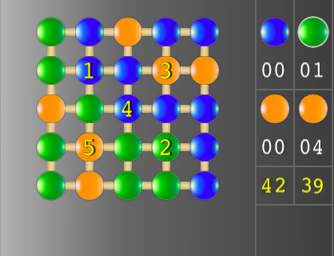 |
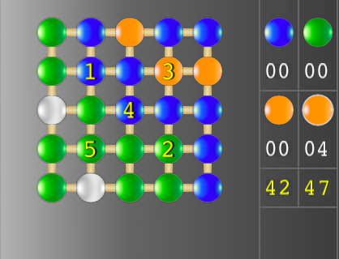 |
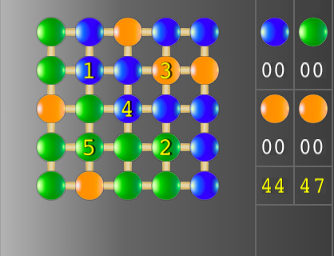 |
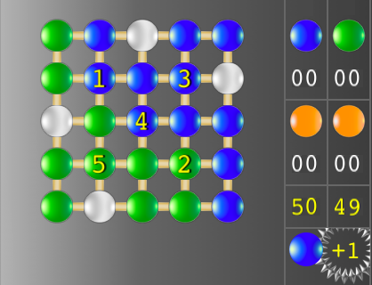 |
| １〜５の数値が所定の場所に、ランダムに設定されています。 |
競技者２駒を左の列から４番目、上の行から２番目に指定しました。共通 駒の７個とポイントに設定された８の合計１５が加算され、競技者２の得点が６４と表示されています。 | 指定できる無指定のポイントは２ポイントなので、残りの共通駒２個は、 競技者１の得点となります。 | 得
点計算の文字をタッチすることで、得点の計算を行います。競技者１の得点は、競技者１駒で囲まれた共通駒３個とそのポイントに数値で設定された３の合
計６を加算して、５０になります。競技者２の得点は、競技者２駒で囲まれた共通駒２個を加算して、４９になります。競技者１の得点が１多いので、競技
者１駒と＋１を表示し、競技者１が勝ったことを示します。 ※２ |
| １．競技者２が競技者２駒を指定前の競技画面 | ２．競技者２が競技者２駒を指定後の競技画面 | ３．競技者２が共通駒を４個指定後の競技画面 | ４．得点計算後の競技終了画面 |
| 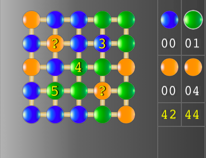 |
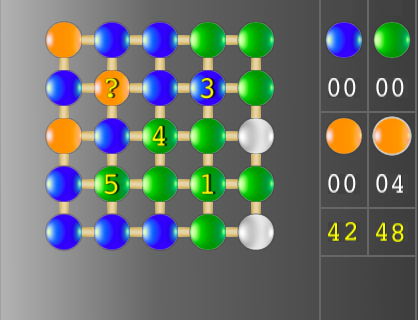 |
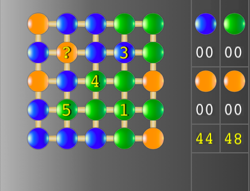 |
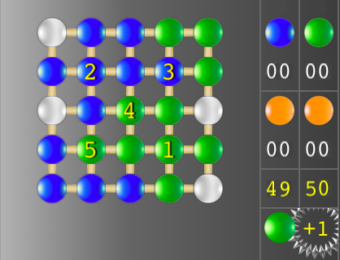 |
| 盤上のポイントに３、４、５の数値が表示されているので、？は１、２で
あることが予想できます。 |
競技者２駒を左の列から４番目、上の行から４番目に指定しました。？に １が設定されていたことが分かります。共通駒の３個とポイントに設定された１の合計４が得点に加算され、競技者２の得点が４８と表示されています。 | 指定できる無指定のポイントは２ポイントなので、残りの共通駒２個は、 競技者１の得点となります。 | 得
点計算の文字をタッチすることで、得点の計算を行います。競技者１の得点は、競技者１駒で囲まれた共通駒３個とそのポイントに？で設定された２の合計５を
加算して、４９になります。競技者２の得点は、競技者２駒で囲まれた共通駒２個の合計２を加算して、５０になりま
す。競技者２の得点が１多いので、競技者２駒と＋１を表示し、競技者２が勝ったことを示します。 ※２ |
| ○ |
競技者１が競技者１駒を指定する場合、競技者１が競技者１駒で取得する 得点と、４個 の共通駒を指定後に、競技者２が競技者２駒で取得する得点を予想します。その差が、競技者１の得点にプラスとなるポイントを指定します。競技者２の場合も 同様です。 |
| ○ | 競技者１が４個の共通駒を指定する場合、４個の共通駒を指定後に、競技 者２が競技者２駒で取得する得点と、４個の共通駒を指定後に、競技者１が競技者１駒で取得する得点を予想します。その差が、競技者１の得点にプラスとなる ポイントを指定します。競技者２も同様です。 |